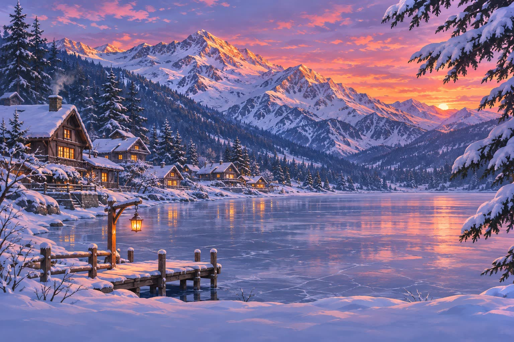
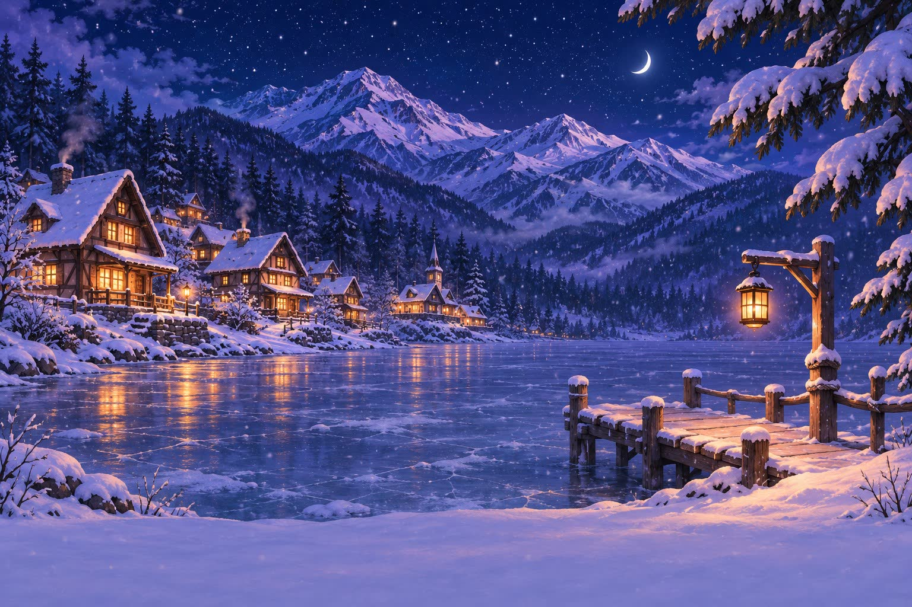

It snows on your windows
Flakes drift down over everything you have open. Where they land on top of a window or the Dock, they build into drifts.
Move a window
Its snow rides along. A sudden start, stop or turn shakes some loose, and that snow keeps the speed it had.
Close or resize it
Close or minimize a window and its snow falls. Make it narrower and what lay past the edge tips off.
Choose the weather
How much falls, how windy it is, how see-through the flakes are, and whether they fall behind your windows.
Christmas on your desktop
Grow up to three trees and hang baubles, lights, candy canes and a star. Roll snowmen onto your windows, and drag everything wherever you like it.
Visitors drop by
Santa flies over and drops presents; click one to open it. The gift train stops at your first tree to deliver, and the Yeti walks up to a snowman and carries it off unless you click him. They come on their own every 6 to 15 minutes, or call them from the panel.
A painting that follows the sun
The winter wallpaper changes with your local sunrise and sunset, and the snow and decorations take on the light of the hour. macOS asks once for your rough location; it never leaves your Mac, and without it your time zone stands in.


Everything is under the snowflake
Windowsill lives in the menu bar and has no Dock icon.
- Weather
- How much snow, how windy, how see-through, and whether it falls behind your windows.
- Christmas
- Grow trees and decorate them, roll snowmen, and call Santa, the gift train or the Yeti.
- Wallpaper
- Day, evening or night, or follow the time of day. Choose Your own to get your picture back.
- Settings
- Open at login, every display, full-screen apps and screen sharing.

Install it
- Open Windowsill.dmg from your Downloads and drag Windowsill into Applications.
- Open Windowsill from Applications or Spotlight. macOS asks once whether to open an app from the internet: click Open.
- Snow starts falling. Click the snowflake in the menu bar for the panel, and tick Open Windowsill at login in the welcome note to have it every time you start your Mac.
If a full menu bar or the notch hides the snowflake, open Windowsill again from Applications and the panel opens in a window.
Free, for macOS 26 Tahoe or later on Apple silicon and Intel.
It stays out of your way
The weather pauses in full-screen apps, while the display sleeps, while the screen is locked and while another user has the Mac, and stops altogether when you turn it off. On battery or in Low Power Mode it runs lighter. It stays out of screenshots and screen sharing unless you ask.
Windowsill collects nothing. Its only network request is a daily look at GitHub for a new version, which you can turn off in Settings. If it ever quits unexpectedly, its next launch offers to open a GitHub issue with the crash details filled in; nothing is sent unless you submit it.